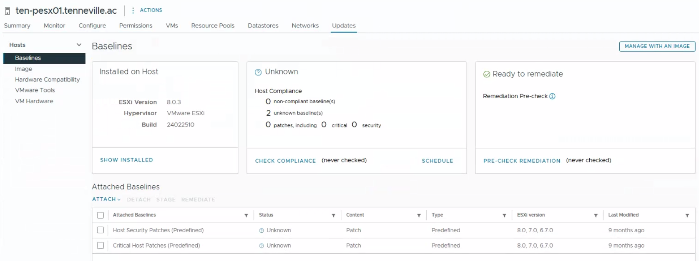

Objective
This check verifies the ESXi hypervisor version and update status. It confirms whether the installed version has been reviewed with regard to vendor support, security, and stability.
This is a verification-only control. No update installation or remediation is performed as part of this check.
Prerequisites
- Access to vSphere Client
- Read or monitoring permissions
- Access to ESXi hosts and virtual machines
Open vSphere Client
Log in to the vSphere Web Client using a web browser. Access the vCenter instance via its IP address or FQDN.

Check ESXi Version
Log in to the vSphere Web Client, select the ESXi host, and open the Summary tab.
Verify the ESXi version and build number currently installed.

Review Update Status
Review whether the ESXi host is running a supported and up-to-date version. If applicable, check update compliance through lifecycle or update management tools.
- ESXi version is supported by the vendor
- No known critical security updates missing
- Upgrade path identified if updates are pending
Result Interpretation
- ✅ OK – ESXi is up to date or update status reviewed and acceptable
- ⚠️ WARNING – Updates available but postponed or planned
- ❌ NOK – ESXi version outdated or unsupported